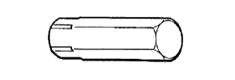
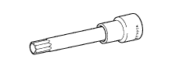
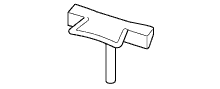

CYLINDER HEAD > COMPONENTS > Preparation

| Air gun | - |
| Bar φ5 mm (0.197 in.) | V-ribbed belt tensioner |
| Brush | - |
| Caliper gauge | - |
| Chain block | - |
| Compression gauge | - |
| Container | - |
| CO/HC meter | - |
| Cutter (45°) | - |
| Cutter (30°) | - |
| Cutter (60°) | - |
| Cylinder gauge | - |
| Dial indicator | - |
| Dial indicator with magnetic base | - |
| Dye penetrant | - |
| Engine stand | - |
| Groove cleaning tool | - |
| Hand-lap | - |
| Heater | - |
| Knife | - |
| Magnet hand | - |
| Micrometer | - |
| Pin φ1.0 mm (0.0394 in.) | No. 2, No. 3 chain tensioner |
| Piston ring compressor | - |
| Piston ring expander | - |
| Plastigage | - |
| Prussian blue | - |
| Reamer 5.5 mm | - |
| Ridge reamer | - |
| Rod aligner | Connecting rod |
| Solvent | - |
| Spring scale | Timing chain |
| Steel square | - |
| Straightedge | - |
| Tachometer | - |
| Timing light | - |
| Thermometer | - |
| Torque wrench | - |
| "TORX" socket wrench (E6) | Cylinder head |
| "TORX" socket wrench (E7) | Oil pan |
| "TORX" socket wrench (E8) | Cylinder head |
| Transmission jack | - |
| Vernier caliper | - |
| V-block | - |
| Vise | - |
| Vinyl tape | - |
| Wooden block | - |
 | 09010-3C100 | Set, Hexagon Wrench | - |
 | (09013-6C100) | Socket Hexagon 5mm | - |
 | (09013-6C110) | Socket Hexagon 6mm | - |
| (09013-6C130) | Socket Hexagon 10mm | - |
| (09013-6C140) | Socket Hexagon 12mm | - |
| 09013-1C540 | "TORX" Socket Wrench E-type E10 | - | |
|  | 09013-7C120 | Straight Hexagon 14mm | - |
|  | 09013-7C310 | Bi-hexagon Wrench 10mm | - |
| 09090-04020 | Engine Sling Device | - | |
|  | 09091-1C100 | Oil Pan Seal Cutter | - |
 | 09200-00010 | Engine Adjust Kit | - |
| Toyota Genuine Seal Packing Black, Three Bond 1207B or equivalent | - |
| Toyota Genuine Seal Packing 1282B, Three Bond 1282B or equivalent | - |
| Toyota Genuine Adhesive 1324, Three Bond 1324 or equivalent | - |
| Toyota Genuine Adhesive 1344, Three Bond 1344 or equivalent | - |